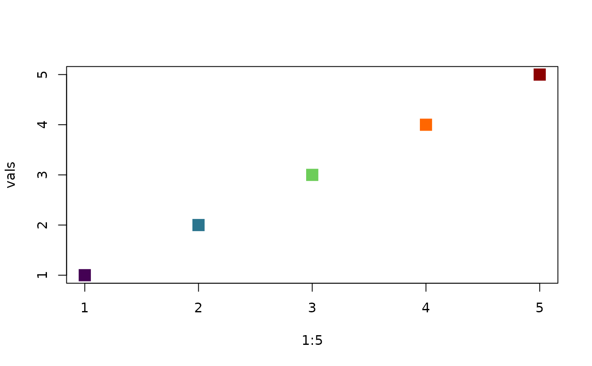
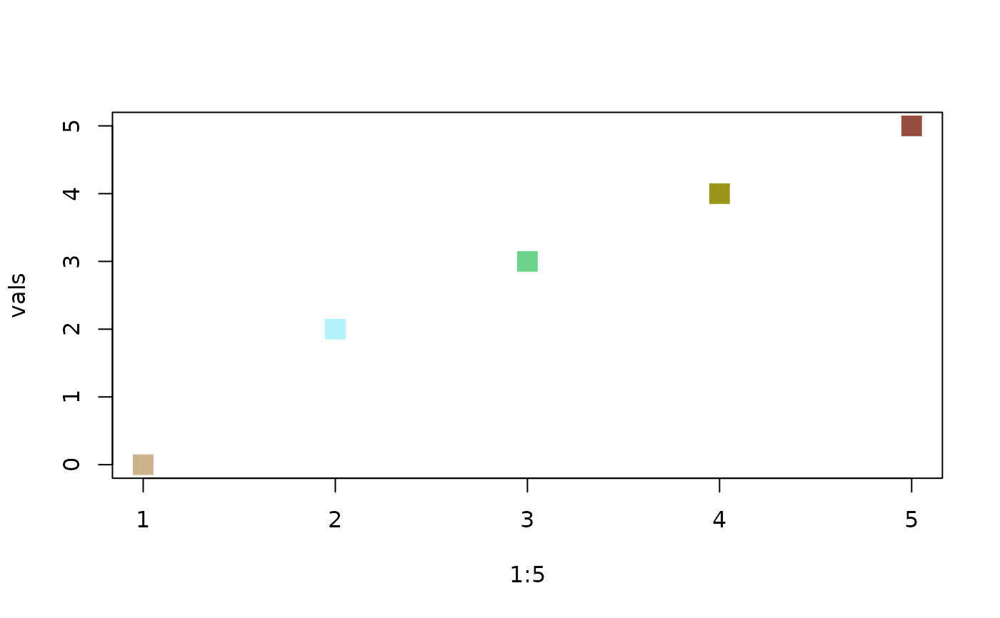
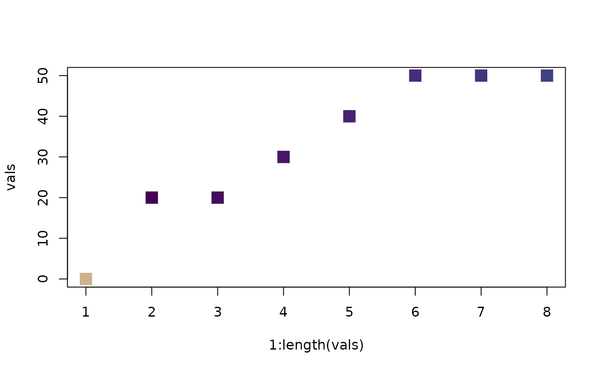

Set the color scale for plots, adding zero_col if zero values are present
Source:R/plotting_functions.R
set_color.RdSet the color scale for plots, adding zero_col if zero values are present
Value
if type is "raster" the function returns a color scale, if type is "points" the function returns a vector of colors
Examples
# set color scale, no zero values!
vals <- c(1, 2, 3, 4, 5)
plot(
1:5,
vals,
col = set_color(vals, color_richness, "navajowhite3"),
pch = 15,
cex = 2
)

# set color scale, zero values present!
vals <- c(0, 2, 3, 4, 5)
plot(
1:5,
vals,
col = set_color(vals, color_richness_CVDCBP, "navajowhite3"),
pch = 15,
cex = 2
)

#Note that in case of presence of ZEROS, min values change with the scaling
#This only happens as scalling starts with zero as "navajowhite3" and 1 as the first value of colfun
vals <- c(0, 2, 2, 3, 4, 5, 5, 5) * 10
rc <- set_color(vals, color_richness, "navajowhite3")
plot(1:length(vals), vals, col = rc, pch = 15, cex = 2)
